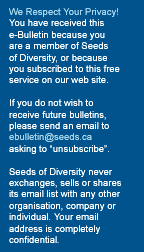
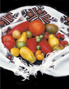

Green
Tip
Let your tomatoes ripen as long as possible on the plant before harvesting
them for seeds. Nearly-ripe fruit yield viable seeds, but they may not
last as long in storage or germinate as vigorously as seeds from a fully-ripe
fruit.
For more tips on saving your own seeds, you can purchase our How to Save
Your Own Seeds: A Handbook for Home Seed Production, by visiting our website
at www.seeds.ca.
Our
Members Asked
Question: What is my member number?
Answer: Your member number is a 4 or 5 digit number found on the mailing label or envelope of any of your magazines. It does not change from year to year.
Member
News

Did you know that 70% of our food crops need insects for pollination?
Unfortunately, these beneficial insects are under pressure from loss of
habitat, loss of food sources, disease, and pesticides. As insect populations
are threatened, so are the fruit
and vegetable produce, and the wild ecosystems that depend on these pollinators.
Take the Pollination Protection Challenge.
Through the Pollination Canada program, a joint venture between Seeds of Diversity Canada and Environment Canada’s Ecological Monitoring and Assessment Network Coordinating Office (EMANCO), and a partner with the Canadian Pollinator Protection Initiative, you can now participate in a nationwide survey of pollinators and ensure the future of pollinator insects and our planet.
Interested?
Visit our website at
www.pollinationcanada.ca
Contact
P.O. Box 36, Stn Q
Toronto, ON
M4T 2L7
1-866-509-SEED

Design by Allison Prindiville
Copyright © 2007 Seeds
of
Diversity Canada
“Seeds of Diversity is not just a collection of seeds. It is a network of people growing, exchanging, learning, and delighting in the wonders of your shared horticultural inheritance.”
In this issue:
Calling all tomato gardeners! There's still time to join the Canadian Tomato Project
Seedy Saturdays and Seedy Sundays
Calling all tomato gardeners! There's still time to join the Canadian Tomato Project
 |
 |
|  |
If you can grow tomatoes, you can participate in this fun project. Our goal is to grow and document Canadian-bred tomatoes in all parts of Canada, and we'll give you the seeds for free. Members can obtain seeds of the varieties listed below (while quantities last), courtesy of Jim Ternier, tomato grower and Seeds of Diversity's President.
As a member, all you have to do is send an email to our office, or leave a phone message, telling us your name, address, and the varieties you would like to try. If you don't have a preference, just tell us how many you would like (we may have to limit quantities based on supply).
All we ask is that you fill out a Tomato Observation Form for each Canadian tomato variety that you grow, and send it to our office at the end of the season. Forms are available on our web site, and we'll gladly mail one to you if you ask.
Some of these varieties are scarce, and need to be regrown. If you're an experienced seed grower, and you're able to multiply one or more rare tomato varieties, please let us know how many you can grow out.
Not a member? Grow a Canadian tomato and help us document it by filling out the observation form. Check our Canadian Seed Catalogue Inventory at www.seeds.ca/hpd for sources of seeds.
| Canadian Tomato Varieties Still Available for 2007 | |
| From
British Columbia SUMMERJET (1970) SUGAWARA |
From
Saskatchewan SWIFT (1965) MELFORT (1973) |
| From
Alberta SUB-ARCTIC PLENTY (early 1970’s) SUB-ARCTIC? MAXI (1975) BROOKPACT (1970’s) |
From
Ontario ALACRITY (1910) HERALD (1926) RIDEAU (1962) MOIRA (1972) EARLIROUGE (1977) BELLESTAR (1981) COLDSET (1961) KANATTO EARLY RUTGERS RIDEAU SWEET |
| From
Nova Scotia SCOTIA (1956) |
|
| From
Quebec PRECOCIBEC (1974) ROSABEC (1975) CANABEC (1976) QUEBEC # 1121 (1978) QUEBEC #13 MAC PINK (1973) SAVIGNAC (also known as Dufresne) MONTREAL 61 BLANCHE DU QUEBEC |
From
Manitoba MORDEN YELLOW (1950) MANITOBA (1956) PRAIRIE PRIDE (1978) KEYSTONE (1978) PEMBINA (1973) |
See the Canadian Tomato Project at www.seeds.ca/proj/projects.php for more information.
Contact
office@seeds.ca
1-866-509-7333
Seedy Saturdays and Seedy Sundays
 |
Canada is rich in agricultural and horticultural resources and has a strong heritage of gardening traditions in many diverse regions. Unfortunately, our access to diverse Canadian plant varieties has diminished severely in recent decades. Thousands of plant varieties are suited for Canadian gardens, but only a handful are available to most growers.
In response to this problem, independent local public events called Seedy Saturdays have sprung up across the country.
Seedy Saturdays bring together home gardeners, seed savers, native plant collectors, agriculture conservation groups, and community gardeners as well as local seed companies that sell open-pollinated varieties of vegetables, fruits, flowers, grains and herbs.
More than 45 of these community seed festivals are happening across Canada this year, so there is likely one near you. To find out if there is an upcoming Seedy Saturday event planned in your area, visit www.seeds.ca/seedysaturdays.
Many Seedy Saturday events have already taken place this year across Canada. We would like to share with you their success in this month’s e-newsletter.
 |
 |
Qualicum
Beach Seedy Saturday Kicks Off the Year
with "Grow Your Own Food and Flowers"
By Keith and Joy Smith,
Seedy Saturday Organisers,
gwenmar@shaw.ca
The
Qualicum Beach Seedy Saturday Association's 5th annual event on February
3rd was a resounding success - the best one yet for us. QBSSA prides itself
on being the "First in Canada"
i.e. the first one in the spring to start things off.
This year our theme was "Grow Your Own Food and Flowers". 1650 people attended and the 50 vendors who displayed and sold products were thrilled with the turnout and the sales they made.
Four
special speakers, including Carolyn Herriott, spoke to
sell-out crowds. There seems to be so much interest in food
self-sufficiency that we will probably re-visit that topic for our
2008 event.
Our
Seedy Saturday is "non-profit", so the money we take in
is recycled through donations to local garden clubs, composting schemes,
and more. Since we started 5 years ago, Qualicum Beach Seedy Saturday
Association has given $7200 back to
the community.
Photos : Keith Smith, Vice-President of the QBSS Association
Sowing the Seeds
of Energy Diversity in Simcoe, ON
By Beverley Wagar,
Seedy Saturday Organizer,
bev@mygreengarden.ca
On Saturday, February 10, 2007, hundreds of people attended Sowing the Seeds of Energy Diversity, a Seedy Saturday event at Wagon Wheel Produce & Corn Maze, Southwest of Simcoe, Ontario. Attendees visited the tables of local vendors, environmental organizations, and Master Gardeners. The day included a seed swap, a delicious hot lunch, and four excellent presentations on food localism and energy alternatives.
Our Seedy Saturday wasn't typical - the theme was energy diversity and peak oil and how these two larger themes relate to gardening and agriculture. Most Seedy Saturdays have speakers on plants and flowers. My thinking is more big-picture - making connections between ecosystem diversity, food security, and localism in a low-energy world. This is a hefty conceptual chunk, and the connection to gardening is lost on many traditional gardeners. The people who attended this event, however, seemed to get it, and the room was pretty much at capacity the whole day.
It was great to see people from all over the area meeting and talking - finding kindred spirits in former tobacco country, where “organic farm” raises the spectre of radicals, communes, and granola.
Because pesticides, herbicides, agricultural machinery and food transport all depend on fossil fuels, modern industrial agriculture is little more than a system of turning oil into food. Agriculture is, by far, the bigger consumer of fossil fuels planet-wide. As energy supplies become more expensive and less reliable, our industrial food system will be put under tremendous stress. Food will be our number one concern. We need local food and local food systems - the sooner the better.
Local solutions to energy issues include what we do on our own gardens, properties, towns and cities: growing our own food, buying locally grown produce, starting community gardens and CSAs, and teaching people how to grow food. We must recognize the fossil-fuel dependence of Big Ag, Big Hort, and the international seed cartel (which now owns 25% of the world's seed supply) and prepare for the demise of these behemoths.
I don't know if the message will reach the people it needs to reach, but the work goes on. I highly recommend Richard Heinberg's article "Fifty Million Farmers" for an excellent and in-depth look at the issues: http://energybulletin.net/22584.html.
For
more information about our Seedy Saturday,
including our list of speakers and vendors, visit http://www.mygreengarden.ca/seedy/.
THANKS
To all the wonderful Seeds of Diversity Canada volunteers who not only run Seedy Saturdays and Sundays but also staff booths for us!
Seeds of Diversity could not exist without the dedicated volunteers who make us more than a collection of seeds – it is also a network of dedicated people “growing” a better world. At this time, we are looking for volunteers to help us with:
Canadian Tomato Project Coordination
We are looking for a volunteer to help coordinate growers for the Canadian
Tomato Project. More details upon request. Volunteer needs to be available
for 10-20 hours per year. Training and support provided by project leaders.
 |
Data Entry
We are looking for several volunteers to help update our Resource List, and
Canadian Seed Catalogue Inventory. This involves simple web-based update
of the information, and can be done from any internet-connected computer.
Volunteers need to be available for a minimum of 10 hours per year.
For more details on how to get involved, contact valerie@seeds.ca